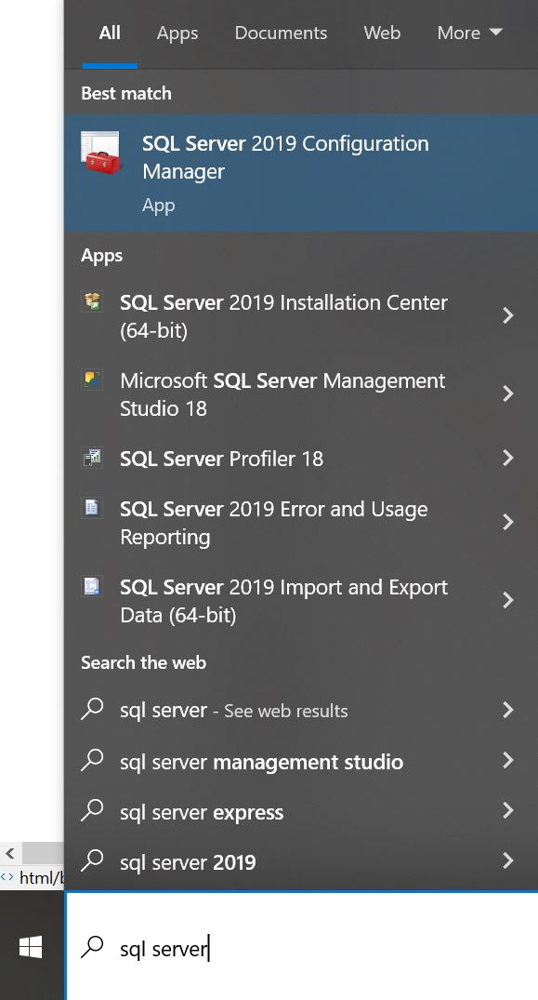
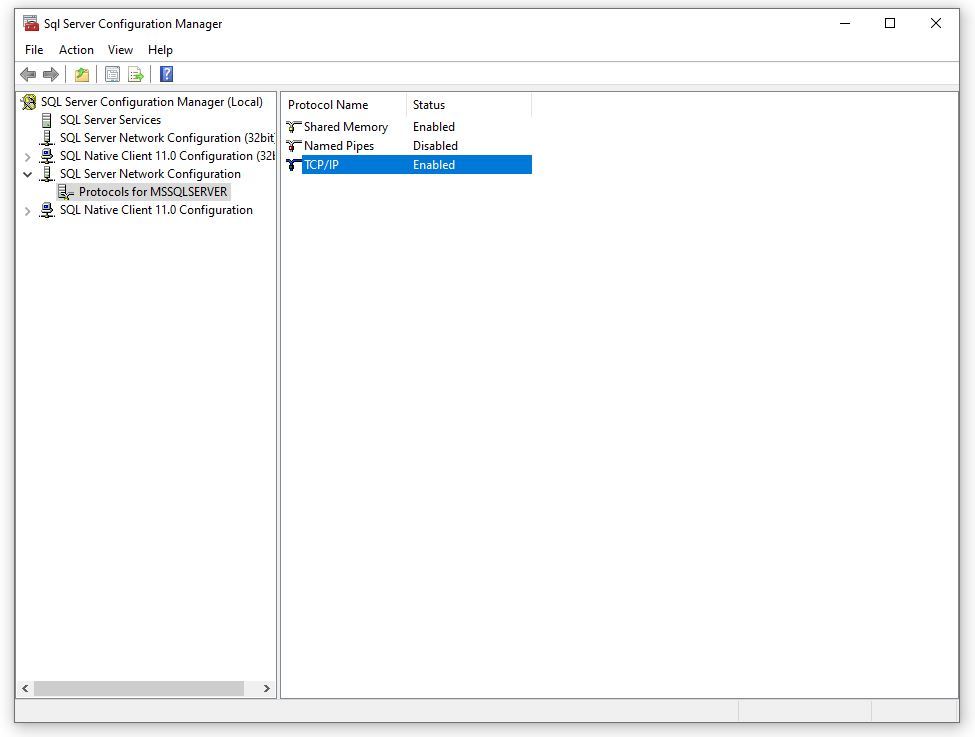
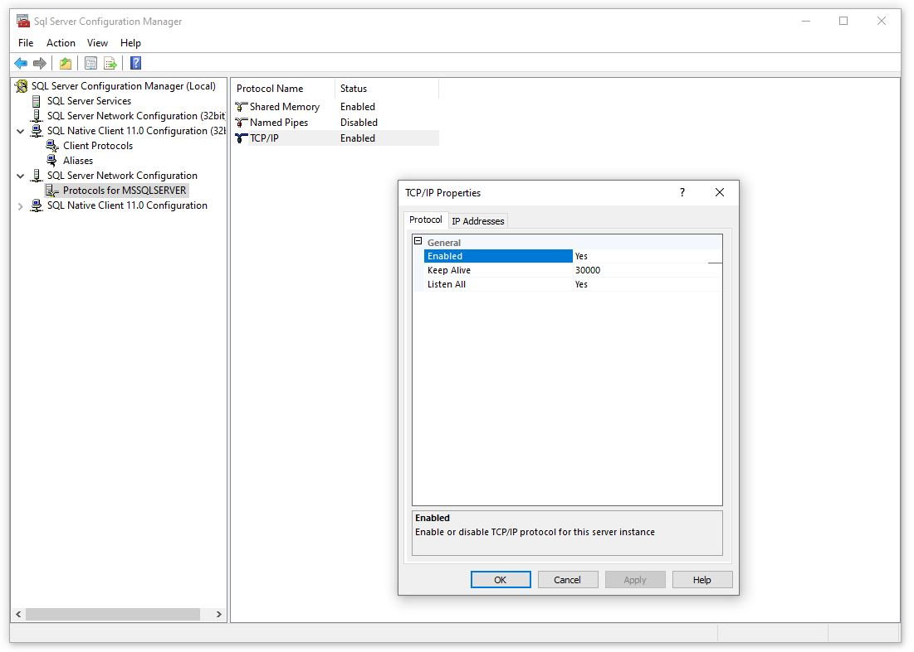
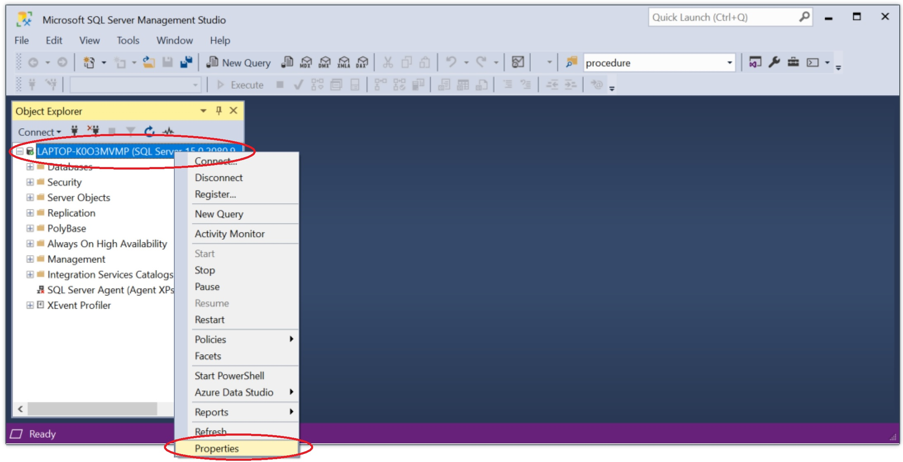
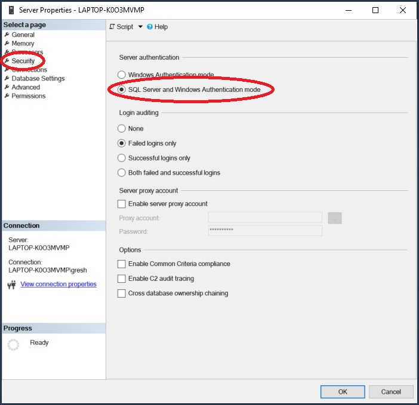
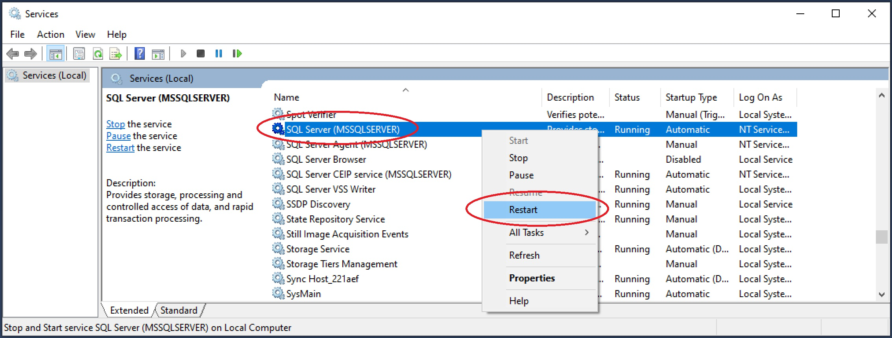
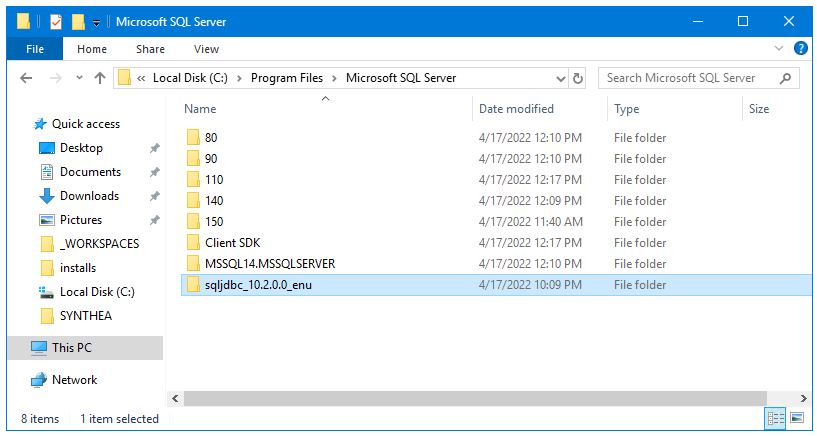

Install Microsoft Sql Server
Follow the instructions at the link below to install a Microsoft Sql Server. Select the SQL Server on-premises option.https://www.microsoft.com/en-us/sql-server/sql-server-downloads

Install Microsoft Sql Server Management Studio (SSMS)
Follow the instructions at the link below to install a Microsoft Sql Server Management Studio.https://docs.microsoft.com/en-us/sql/ssms/download-sql-server-management-studio-ssms?view=sql-server-ver15

Enable TCP/IP
Some (all/most?) installations of MS Sql Server do not enable TCP/IP connectivity by default. This needs to be configured manually. Do the following to activate TCP/IP connectivity for MS Sql Server.
Start Sql Server Configuration Manager
Enable TCP/IP
TCP/IP connectivity can be enabled in the SQl Server Configuration Manager as shown below.
Check TCP/IP Port
While we're here, we can check what port MS Sql Server is listening on (default is 1433). Right click on "TCP/IP Enabled" and select "Properties" to display the TCP/IP Properties window shown below.
Enable Mixed Mode Authentication
By default, some installations of MS Sql Server have mixed mode authentication disabled. To authenticate using a username/password (i.e. not using Windows authentication), mixed mode authentication needs to be enabled. Enable mixed mode as shown below
Open Sql Server Management Studio (SSMS), select the server, then select Properties.

Select Security, then select the radio button for "SQL Server and Windows Authentication mode"

Restart Sql Server: Open the Windows Services utility and restart the Sql Server service.

Download the MS Sql Server JDBC Driver
The MS Sql Server JDBC Driver jar file can be downloaded directly from here, or from Microsoft here.
Install DLLs for Microsoft Sql Server JDBC Connectivity
Some instalations of MS Sql Server do not include the DLLs required for JDBC Connectivity. These files can be downloaded from Microsoft and are included in the JDBC Driver download described above here. The copy of the files we used is here. After the files have been downloaded, unzip the zip file (we unzip to directory shown below).

Then add the location of the dll to your path as shown below.